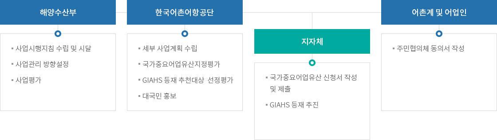
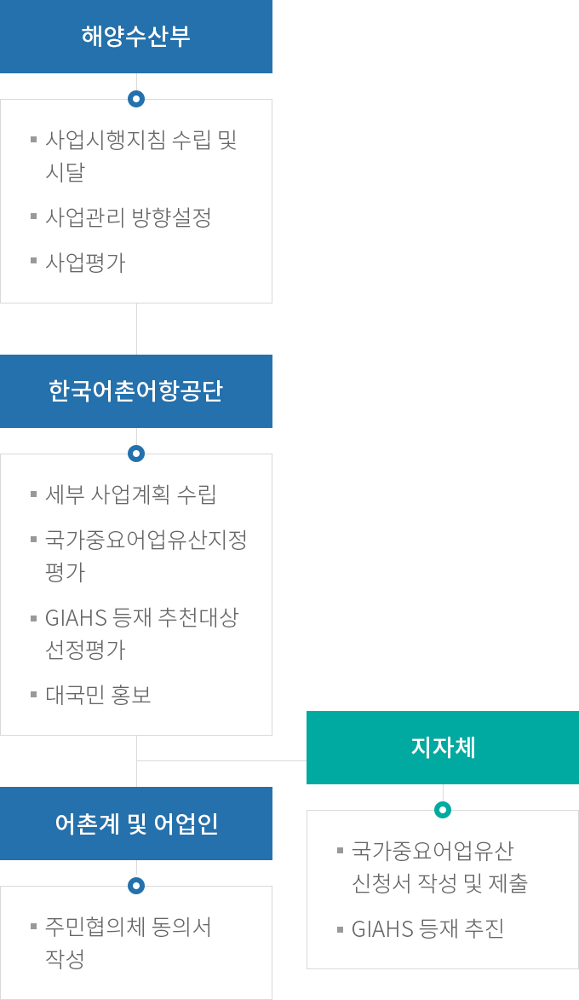

국가어업유산 지정 관리
- 홈
- 사업소개
- 활력있는 어촌
- 국가어업유산 지정 관리
추진계획
- 국가중요어업유산 신규 지정을 위한 신청 접수 추진 및 접수된 어업자원을 단계별로 평가하여 국가중요어업유산 최종 지정
- FAO 세계중요농업유산(GIAHS) 등재 추진대상 신청 접수 및 선정평가
- 국가중요어업유산 온·오프라인 대국민 홍보 진행
추진체계


해양수산부
- 사업시행지침 수립 및 시달
- 사업관리 방향설정
- 상버평가
한국어촌어항공단
- 세부 사업계획 수립
- 국가중요어업유산지정평가
- GIAHS 등재 추천대상 선정평가
- 대국민 홍보
어촌계 및 어업인
- 주민협의체 동의서 작성
지자체
- 국가중요어업유산 신청서 작성 및 제출
- GIAHS 등재 추진